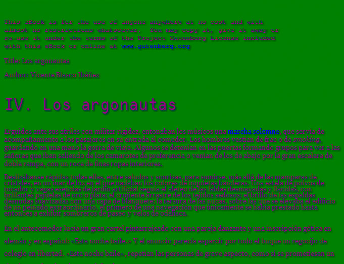
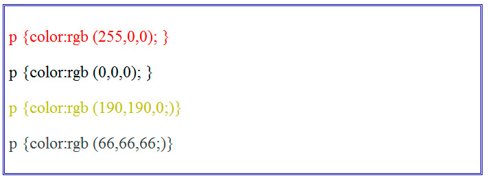
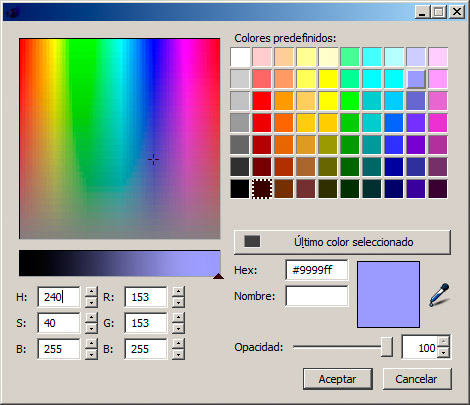
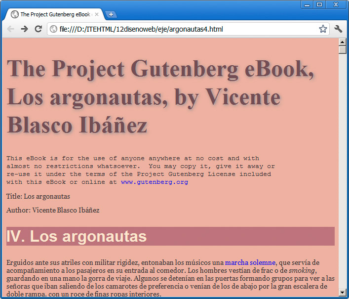

Las propiedades que se emplean para definir el color del texto son las siguientes:
- color: para indicar el color del texto.
- background-color: para indicar el color de fondo de diferentes elementos, entre ellos de un texto.
Formas de definición del color
Al empezar a trabajar con hojas de estilo, encontraremos que el método más sencillo para definir un color es mediante su nombre en inglés (especialmente si tenemos unas nociones básicas de inglés; en caso contrario encontraremos este método muy complicado).
Por ejemplo, para definir un texto de color rojo de una clase determinada utilizaríamos esta regla:
.parrafodestacado {color:red; }
Un título azul y con el fondo amarillo se conseguiría así:
h1 {color:blue; background-color:yellow; }
Y que toda la página tuviese un color lila, con fondo verde y sombra azul oscura, se consigue así:
body {
color:purple;
background-color: green;
text-shadow: midnightblue 2px 2px 4px;
}
Sería digno de verse. La figura lo muestra:

Nota
Algunos nombres de colores son más intuitivos que otros, ¿de dónde hemos sacado el color midnightblue? La lista de colores de nombres proviene de una serie denominada colores X11, que son admitidos en su mayoría por todos los navegadores. Se puede consultar un listado en la página http://en.wikipedia.org/wiki/X11_color_names, con sus equivalencias en formato RGB y hexadecimal.
El ejemplo anterior también nos arroja con crueldad otra realidad fundamental. Hasta ahora, usando negro sobre blanco, hemos podido elaborar páginas web con un cierto equilibrio estético pero, al comenzar a utilizar el color, todo esto se volverá mucho más complejo. Elegir unos colores que armonicen correctamente y que refuercen nuestro mensaje, en lugar de desvirtuarlo, es un verdadero arte. Para alcanzar el equilibro necesario, el mejor consejo posible es practicar, practicar y practicar. Y nunca conformarnos con el primer resultado.
Definir un color numéricamente
El sistema de nombres de color se nos quedará corto rápidamente y necesitaremos buscar alguna solución para definir colores de una forma precisa.
En los ordenadores, en las pantallas, se emplea un sistema de representación del color basado en tres parámetros. Un ordenador es capaz de representar varios millones de colores con tan sólo realizar combinaciones de tres colores básicos: el rojo, el verde y el azul.
Hay otros sistemas de representación de colores, pero el basado en estos tres, conocido como sistema RGB (son las siglas de los tres colores en inglés, red, green y blue) nos servirá perfectamente para diseñar nuestros propios colores.
La definición de un color en formato RGB consiste en indicar qué cantidad de cada uno de esos colores debe llevar el color resultante, sabiendo que el valor más bajo representa la ausencia de color y el color más alto el blanco absoluto.
El color más alto dependerá de la medida que estemos empleando. Podemos hacerlo mediante números decimales que van del 0 al 255 o mediante valores porcentuales.
Veamos algunos ejemplos:
- p {color:rgb (255,0,0); } representa el rojo puro. El valor de r está al máximo mientras los demás están al mínimo.
- p {color:rgb (0,0,0); } este color sería el negro; todos los valores al mínimo.
- p {color:rgb (190,190,0;)} éste sería un amarillo claro, pero no el más claro posible, que se obtendría con (255,255,0). La combinación de rojo y verde en una pantalla proporciona el amarillo.
- p {color:rgb (255,255,255;)} es el blanco.
- p {color:rgb (66,66,66;)} cuando los tres tonos se mezclan a partes iguales, obtenemos siembre un color gris, más o menos oscuro, dependiendo de lo elevados que sean los valores.
Observemos algunos de esos ejemplos en la imagen:

Todos los ejemplos anteriores también pueden ser expresados en valores porcentuales. Por ejemplo:
p {color: rgb (100%, 0%, 0%); }
p {color: rgb (80%, 80%, 0%); }
p {color: rgb (33%, 33%, 33%); }
Actividad 4
Identificaremos a qué colores se corresponden las reglas anteriores.
Realicemos además la incorporación de otros tres colores más. Pensaremos en un color y a continuación intentaremos formularlo mediante sus combinaciones de rojo, verde y azul. Al principio resulta difícil acertar pero, cuantas más veces probemos, más sencillo nos resultará.
Colores hexadecimales
Empleando la lógica del formato RGB, se emplea con frecuencia la definición de colores basada en valores hexadecimales, en lugar de decimales. Es decir, en vez de utilizar valores que van de 0 a 255, utilizamos valores que van de 00 a FF. Los códigos hexadecimales emplean los valores del 0 al 9, más la A, B, C, D, E y F.
En este caso el número se precede del signo #. Los ejemplos anteriores quedarían así:
p {color: #ff0000; }
p {color: #bbbb00; }
p {color: #424242; }
Encontraremos este tipo de notación en muchos sitios. Produce unos códigos muy breves y que se descifran con rapidez, una vez que nos hemos acostumbrado a leerlos. De hecho, aún se pueden abreviar más, empleando un solo valor para definir cada color, pero reduce mucho el número de colores que podemos obtener, por lo que es mejor mantener el sistema de dos cifras para cada componente de color.
Definir un color con un editor web
Elegir los colores mediante códigos puede resultar costoso al principio. En este caso, los editores web serán de gran ayuda. Por ejemplo, si empleamos BlueGriffon para escoger un color determinado, desde el panel Propiedades de estilo, en la sección Colores, veremos que desde el cuadro desplegable de la figura podemos seleccionar un color, utilizando todos los métodos que hemos visto hasta ahora. En la parte inferior se encuentran los valores en RGB, en hexadecimal e incluso por su nombre, mientras que en la parte superior podemos seleccionar el color que más se aproxime a nuestras necesidades.

Ayuda para la definición de colores
En Internet encontramos muchas herramientas para definir conjuntos de colores, lo que se conoce como una paleta de colores. Más que mezclar colores al azar, es conveniente elegir colores siguiendo algunas reglas básicas. Hay toda una teoría de uso del color que nos permite saber qué colores combinan bien con cuáles.
Además de tomar como referencia aquellas páginas que nos gusten, podemos recurrir a herramientas, como este par de ejemplos:
- Adobe Kuler: http://kuler.adobe.com/
- Color Blender: http://www.colorblender.com/
La figura siguiente muestra un esquema concreto aplicado al documento. Hemos elegido un conjunto de colores y lo hemos ido aplicando a ciertos elementos de la página. Nos podrá gustar más o menos, pero el conjunto mantiene cierta armonía.

Pregunta Verdadero-Falso
Verdadero Falso
Verdadero Falso